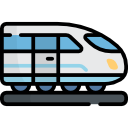

ORE 6:00 IL T
RENO
ABBIAMO PRESO IL TRENO ALLE ORE 6:00 ALLA STAZIONE DI TERMINI PER DIRIGERCI VERSO MILANO CENTRALE, A FARCI COMPAGNIA C'ERA IL PROFESSOR MINERVA E ALTRI INSEGNANTI CON ALTRE CLASSI, CHE HANNO DECISO DI ADERIRE AL PROGETTO
Free CSS Templates
created with
Website Builder Software
.